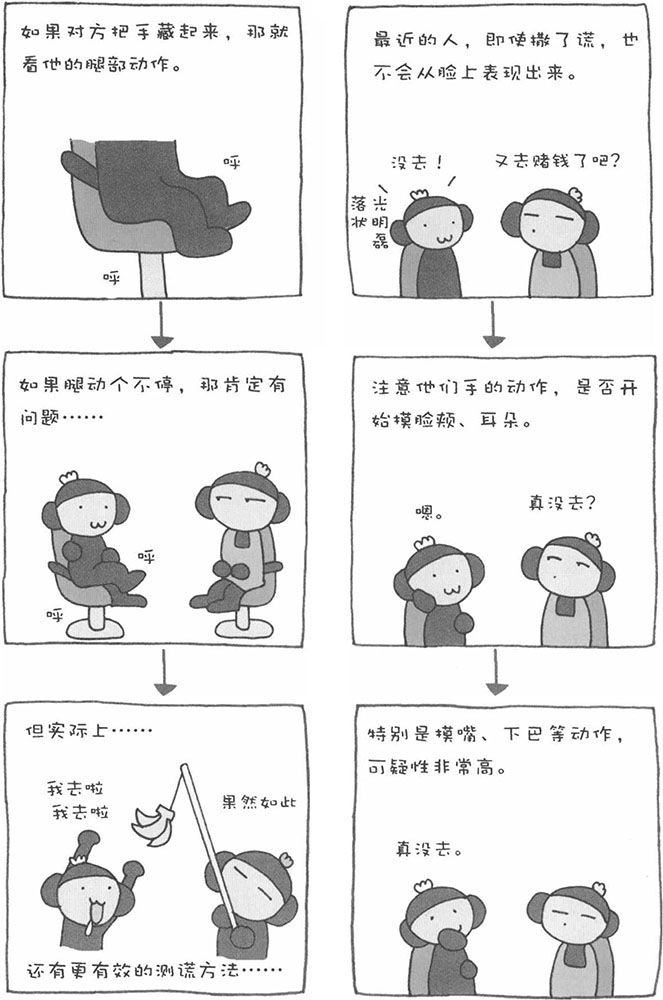

某一天，您突然觉得丈夫的言行举止很奇怪，是否怀疑过他撒了谎？在这个世界上，既有善于撒谎的人，也有不善于撒谎的人。然而，不管哪种人，只要他撒了谎，就会表现出某种特征。一般人们会认为，撒谎的人"容易从脸上表现出来"。因此，如果感觉对方可能撒谎，我们大多会从他们的脸上寻找破绽。事实并非如此，与脸部表情相比，手脚的动作更容易暴露一个人想掩盖谎言的心理。
撒谎的人也清楚别人会通过面部表情来判断自己是否撒谎，因此他们会特别注意掩饰自己的面部表情。实际上，除了一部分特别不善于撒谎的人，我们很难根据面部表情来判断一个人是否撒了谎。日本心理学家涉谷昌三先生就总结出撒谎的人的一些动作特征。
◎ 撒谎之后，人腿的动作会显得很不自然，有可能频繁地交换二郎腿的姿势，也有可能不停地抖动一条腿（撒谎之后，人会感觉极其不自然，总想从这个尴尬的状况逃离出去，而以上动作就是为了掩盖这种逃避心理）。如果对方做出这样的动作，我们就要小心了。
◎ 开始触摸自己的脸颊、耳朵等，尤其是摸嘴角的动作。在内心、深出，撒谎的人也不想说慌，因此想把嘴巴遮住，不让谎言说出来。
◎ 撒谎的人担心、对方通过自己双手的动作看穿自己的谎言，因而会把双手插在口袋里或者抱在胸前，总之就是想把双手藏起来。
◎ 撒谎的人在心理上不想多说话，但是因为害伯暴露，又担心对方因此看穿自己。于是，对于对方的提问，他们反而回答得很快。
◎ "这个……"话语中不停出现停顿，或者做多余的解释。此外，根据个人的性格，有人撒谎时的回答会很简短，而有的人反而会变得话多起来。
◎ 目不斜视、直直地盯着对方说话，这也是撒谎的人怕对方怀疑自己而故做镇定的表现。
